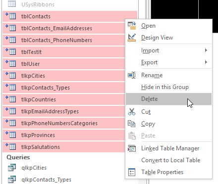
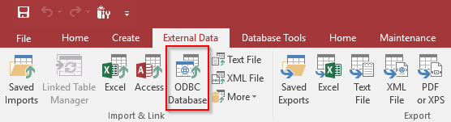
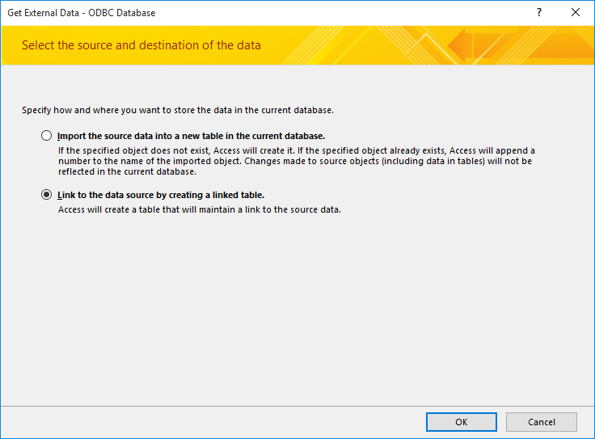
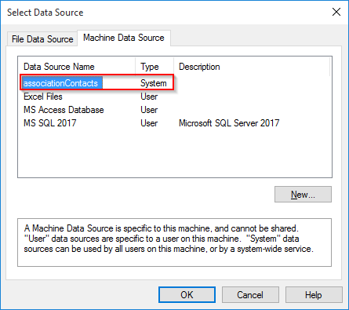
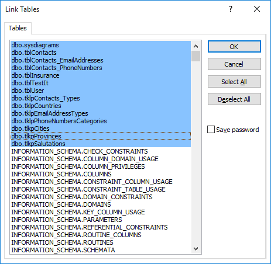
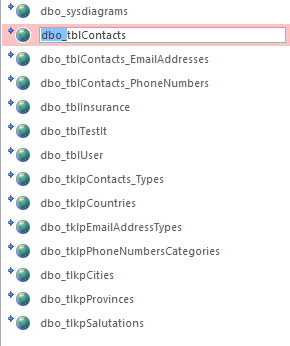

Link SQL Server Tables to MS Access using ODBC
IMPORTANT: Back up your database! (Ctrl + c, Ctrl + v)
- This guide is assuming that you have your SQL Database set up and you've configured an ODBC connection already
Delete all your existing tables

Select "ODBC Database" under "External Data" tab in MS Access


Select your ODBC Database

Select tables to link (ones that proceed with dbo)

Rename the linked tables for your database to recognize (delete "dbo_")

IMPORTANT: If you modify the name of the table in the SQL Server, you need to delete the linked table in MS Access and re-import the renamed table.